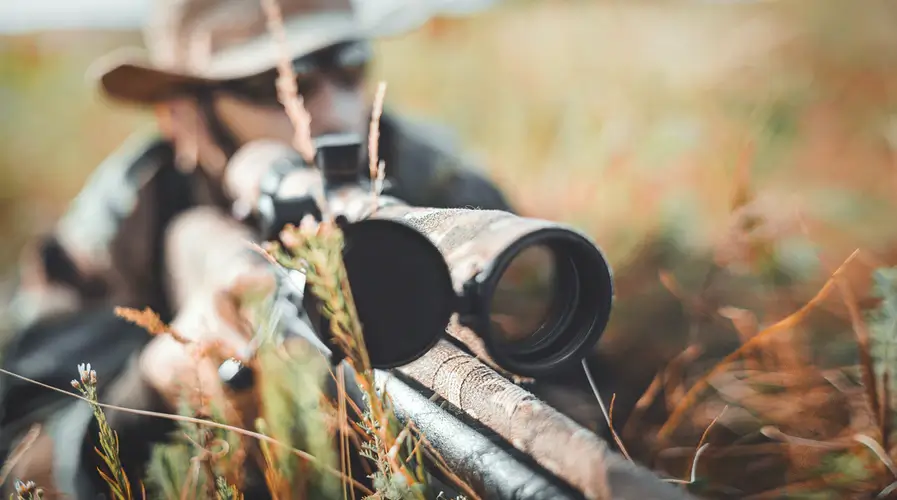
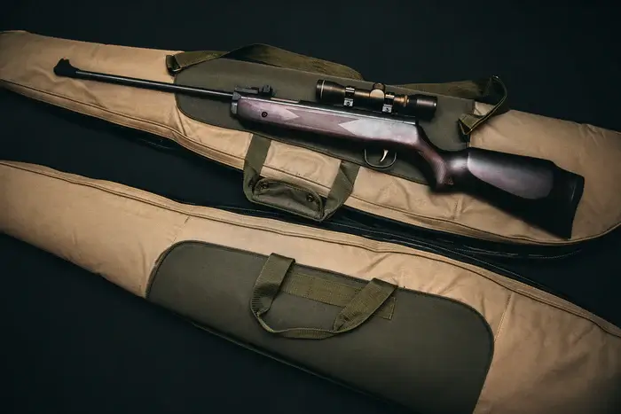
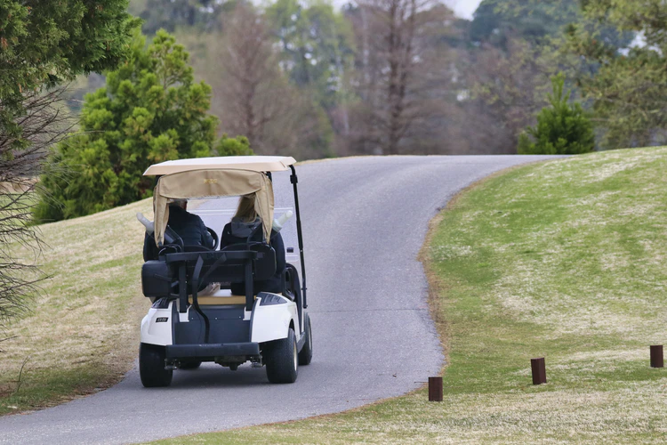

setting up camp
When setting up a camp, there are three things you must consider; location, resources and defence. We have found the most important things you will need to help set up your camp, scroll down to check them out.
Click on the links below to go to each section, or you can take the scenic route and scroll.

Location, Location, Location
The location of your camp is absolutely key to your survival. Something as simple as your location could be the difference to your surviving a week and surviving the apocalypse. Primarily you will need a fresh water source. Rainwater may be enough for a few survivors, but you would still need a way to gather it. It would make more sense to find a body of fresh water, such as a lake or river. Another advantage of settling around water is that you will not have to build defences around a significant portion of the camp. Check out out top tips for your camp below.
-
Campsites:
- There are pros and cons to every type of camp setup. Campsite benefit from being remote, within easy access to natural resources and hunting, the location can be changed daily if needed, and all equipment can be picked up in local camping stores.
- Unfortunately, the remoteness can also be a disadvantage as you are less inclined to get any assistance in the case of attack. You are also not as likely to be able to scavenge for man-made items and foods. On top of this, you are more vulnerable to attack with the possibility of your camp being overrun by attackers, either human or Infected.
- To set up a campsite base, you will need to stock up on needed supplies and make sure you store them so you can easily quickly take them with you if you need to escape your campsite. Always be ready to run at a moments notice.
- You will need to fortify your camp to prevent attacks from animals, humans and the Infected. You can do this with trenches, pitfalls, tin can alarms, fences and guard dogs. If there are many in your group, scouting teams can be dispatched to patrol the area.

-
Abandoned Houses:
- If you didn't prepare ahead with camping gear, you could always use the buildings in your local town or village to hole up for the night. You don't have to build anything, just bring your stuff in and fortify the doors and windows.
- The disadvantage of staying in a building is you don't know if there is something in there already. If you ever enter a building, make sure to check every room and bring a strong torch with you. Even if it's daylight, strong light can sometimes deter the Infected from attacking.
- If you do plan on taking up a permanent residence in a set of buildings. make sure you secure the streets against attack. Bright lights deter the Infected, but they can also alert your enemies to your position. If there are many in your group, you can set up guard posts and have regular patrols along the perimeter.
- When selecting a building to stay in, avoid large cities and towns. These areas often become overrun early on and will be more dangerous to be around. Choose a building near a food or water source. If there is a supermarket nearby, that can provide a good store of food for some time. A stream or rainwater collector can provide a good source of water.

-
Bunkers:
- Bunkers are a great spot to survive the apocalypse, they can be both above or below ground and are often fully stocked to survive months, sometimes even years, without leaving the facility. Underground bunkers are easily defendable and can be camouflaged to avoid detection. Above-ground bunkers can be fortified with weapons of all kinds and could even contain an escape hatch.
- The biggest disadvantage of bunkers is if they are infiltrated, and there is no escape route, you will have to face the threat head-on. This is only a problem if you are not well armed or prepared to face a threat. Other disadvantages could be leaks in poorly made bunkers and a limitation of space. If you are an engineer, you may be able to make adjustments to underground bunkers without undermining the integrity of the structure. But how many of them would be about at the end of days?
- If you do decide to build a bunker now, you could speak to Tiger Sheds, a UK based cabin company, about their Zombie Fortification Cabin. This cabin can be customisable with a large water cannon for non-lethal defence, searchlights and security cameras. This Cabin is comprised of three sections, each separated by heavily secured doors. The first is a garage with roller doors, the second is a food and weapon storage area, and the third is a two-storey bedroom area, including a kitchen, gym, living room and an upper deck to give a 360-degree vantage point. There are even smart slots along the deck which provide cover while you open fire on your enemies.
- If you are one of the lucky few who arrive before they hit capacity, there is also Northern Ireland's Secret Bunker. You can find directions to the bunker on our Contact Page. But hurry, once it's full, you're on your own!
Must-Haves For Every Camp
As well as having the equipment you need, storage is key. If you want to survive anything that you may come into contact with, then you need to really consider your storage options. Keep weapons and ammo locked up and central, deep in your compound and away from potential fires. Food and water storage should be in dry areas, kept off the floor to discourage rats, and kept in secure areas throughout the camp. If one area is destroyed, damaged, or corrupted in some way, you will have other sources of food and water to fall back on. Check out our must-haves below to see what you'll need.
-
Food Stores:
-
Dry Foods:
Canned food is a great starter food for your survival bunker. Thankfully, it's easy enough to can your own fresh food if you have the right equipment. Get creative and don't forget to ration your stores. When you can, eat your fresh food before you eat your canned foods. And make sure to check out your local wholesaler for dry goods! -
Edible Plants:
Your local libraries and garden centres are your best friends. If you can get a book on edible wild plants, you can find a lot of fresh plants in the wild. Garden centres will provide you with all the seeds and equipment you will need to grow fruit and vegetables. Enjoy them in season and make sure to save your seeds!

-
Fresh Meat:
You can get fresh meat one of two ways, by hunting wild game or by raising livestock. If you want to hunt, you will need snares, traps and a weapon such as a bow or a rifle. The ideal animal to raise during the apocalypse is a rabbit. The reason for this is two females and one male rabbit can produce as much meat as a cow within a year. And they are small enough to be carried in a cage for a quick getaway!


-
Dry Foods:
-
Weapons:
-

- Long Ranged: As mentioned earlier, you will likely need a weapon to hunt for fresh meat. A bow or a rifle will do the job, but which one is better? The rifle is a powerful weapon that could also be loud enough to bring attention. The sound of gunfire could alert enemies to your position. It also requires ammunition which will be in short supply in the apocalypse unless you can make more. A bow is not only quiet, but it's also lightweight. Also, the bow and arrows can be crafted from nature, making this a versatile weapon.
- Close Quarters: For close-quarters combat against humans or infected, a short, tactical rifle and pistol would be ideal. With this, you can clear a building or engage in enemies that are getting closer. The only problem, again, is the limited ammunition in the apocalypse. As an ammo free alternative, keep a strong hatchet, hurley stick, or the classic shillelagh to hand at all times.
- Knife: In a pinch, you may find you have nothing left but a knife. A good quality knife can be one of the most important tools you have in your armoury. You may need to cut your way through tent material, cut a rope tying an exit shut, or fending off an enemy. A knife is only as effective as the person wielding it, so make sure you practice your knife skills regularly. It could be the difference between life and death.


-
Transportation:
-

- Golf Cart: It seems silly, but a golf cart would be an ideal form of transport when everything else has come to a stop. Golf carts are electric and, being small and light, require very little energy to actually power. They can go a very long way on one charge. Now, they may not be the fastest vehicle in the world (although they will be once fuel has dried up!) but they can travel for around 2 hours at a steady 15-20mph. That’s about a 40-mile range, which is enough for a patrol, a run to the nearest town, or a trade run to the next colony! If you have a decent electrical grid set up you’ll be able to charge the cart quickly, and even provide additional batteries for longer travel. If you’re particularly savvy with electricity, it’s even possible to set up a golf cart with an on-board solar panel to extend the battery life.
- Car: At the start of the apocalypse, a car might be your best option. But remember, fuel doesn't last forever. Petrol, when kept at 20 degrees, can last for up to six months. Higher temperatures reduce this time to three months. Diesel can last six months to a year, or until it becomes "sticky". Due to this, cars can become useless very quickly unless you can find an alternative fuel source. Watch this video to see how to make biofuel.
- Bus: While the same fuel issue applies to buses, they can be an effective vehicle early on if you reinforce them. By barring up the windows and wrapping the bus in barbed wire, you can protect yourself from most attacks. This vehicle could even be a moving basecamp while you travel to your next destination.
- Horse: Horses are a very reliable mode of transportation. Not only are they quick and agile, but they can also hear danger approaching before you can. You will want to raid a large animal veterinary clinic and a stable to get all the medicine, equipment, and horses you need. If you're lucky, you may even be able to find a cart for your horse to pull. Just remember that not all horses have learned how to pull a cart or carriage, so there may be some teething problems in the beginning. Lastly, always make sure you have at least one male and one female. Horses don't just multiply themselves you know!


Camp Defence
Your defences need to be extensive. Simply being in a building and boarding up the ground floor windows will protect you, for a while, but it will not last for very long. The Infected, especially the organised portion of them, will soon find a way through basic defences. This all ties heavily into the location of your camp. Here, we will go through the top ten defences that you may want to consider, including the pros and cons of each.
-
Moats:
We’re going to start strong with this one. The infected are actively afraid of water, so setting up a water boundary is ideal in this situation. It would need to be deep and wide. We recommend 6 feet deep, and 10 feet across. It is deep enough to be considered a body of water, and wide enough to stop the infected from attempting to jump across the moat. However, this is a massive undertaking. It would require a lot of man-hours to build the moat, as well as a huge amount of water to fill it. This is only, truly, viable if your camp is already connected to a large body of water such as a lake or river. -
Palisades:
Palisades are essentially large wooden walls, made of tree trunks that are sunk into the ground. There are 2 ways of building these: horizontally and vertically, but we would only recommend placing them vertically. Gathering the resources, digging the ditch to lower the trunks into, and generally building the palisade will be an enormous undertaking, and will take weeks, if not months, to complete. This is a good, strong, long-term defensive wall, however, you will need to build a rampart behind it if you want to see over it! -
Barbed Wire:
The use of barbed wire on top of walls/palisades/roofs can create a very efficient obstacle. It catches on clothing, cuts flesh, and will even stop small animals from crossing areas – it may be worth gather around the base of the external camp walls as well as on top of them. However, it may be difficult to locate barbed wire in times like these. It is also susceptible to being cut, but most infected don’t carry wire cutters! -
Fences:
I would say that, wherever possible, try and establish walls and ramparts because of the added security benefit. However, a fence is better than a barricade! We don’t mean a picket fence, but a strong steel one: a chain-link fence. A chain-link fence can be cut, but it will be strong enough to hold back Infected. Make sure to bury the bottom foot of the chain-link fence under the ground so that it cannot be forced up! Ideally go for a taller one, at least 8 feet tall, but the higher the better. The fence posts, ideally also steel, should be no more than 10 feet apart to ensure the fence itself is taught and strong. We recommend an external wall or palisade, but chain-link fences are a good alternative for the short-term and are great for securing other areas inside the compound. -
Floodlights:
Floodlights are very useful against the infected, as the infected are extremely sensitive to light – the brighter it is the further away they’ll stay. A floodlit area surrounding your base will provide a secure area for you to operate in without being concerned about attacks from Infected. However, such a bright light will ensure an almost constant presence of infected at the perimeter of the light, as, as well as deterring them, it also attracts them. The light is likely to attract other people too, uninfected ones, which may or may not cause other issues. Certainly, you should only install floodlights if you have adequate power, as they take a huge amount of power to run. -
Traps:
The use of traps is a must for any survivalist. These traps can be in the form of hidden pitfalls, stakes pushed into the ground, trip wires, and various other traps. These are a very good way of dealing with both people and Infected coming to your camp. Infected are usually somewhat mindless and will even impale themselves on stakes, meaning that you will have to go out and clean them off the stakes and dispatch the impaled infected with a swift blow to the back of the neck or head. Clearing traps is, however, dangerous. Although the traps can be used to efficient stop an attack, even immobilised infected can be deadly. Pitfalls can be customised, filled with water, small stakes, razorwire, or simply be deep enough to trap any infected. -
Alarms:
Alarms are a useful device but can be tricky to set up. Internal alarms can be useful for protecting stores from internal issues, and external alarms can be a great way to alert everyone to an attack. Electric alarms are great; however, you have to have enough power for them to be effective, be able to set them up yourself, and know exactly what each function does. For example, do you know the range of an Infrared Detector? Electric alarms can also be triggered, very easily, by wildlife as small as a fly. Analog or rudimentary alarms are also good, but require being physically reset each time that they are set off. A rudimentary alarm could be a tripwire connected to a bell, tin cans, a foghorn, or even a flashlight. Anything that would alert people to the tripping of the alarm. A combination might be a good thing, where the tripwires are set up and connected to an electronic circuit that sets off alarms throughout the camp, but that would take time and resources to set up, as well as be completely useless in the event of a power cut. -
Guard Dogs:
Man’s best friend. There is a whole new meaning for that now. It has been well documented that dogs are alerted to the presence of a single Infected over a mile away. They will also bark at strangers, be fantastic for guarding things like your stores, and be incredibly useful on patrols. However, dogs require extra resources to look after; food, water, training, even medicine. They are valuable assets but they also consume valuable resources. -
Watchtowers:
This, for us, is an absolute must. Whether you have several placed at your perimeter or a single one in the centre of your camp, they are completely necessary to the protection of yourself and the people with you. They provide the ability to see for, potentially, miles around. They are an invaluable platform to use for defensive purposes as they give a height advantage over everything around them. Without a doubt, a watchtower is a must-have in any camp that wants to survive. They will take time to construct, and resources that may be in short supply, but after having one built it will give you an advantage over anything coming your way. -
Walls:
Perimeter walls are great, and the ultimate in defence but what if you are in a warehouse with no chance of building outer walls? Or stuck in your home in the middle of an overrun town? Do not fret, there are still ways to fortify yourself. Firstly, do not rely on simply boarding up a window. The Infected are very strong, and you will likely have nailed it into the frame internally, meaning that it can be pushed inwards. Once a window has been bordered up, reinforce it. Pile heavy objects against it, or, if you have the skill, build several struts that use the floor or walls to support the boards. If there are gaps in the boards push pointy objects through them – knives, forks, scissors. The Infected may be strong but they still feel some pain. Essentially, the building is a strong fortification because of its solid walls, just make sure that the gaps are covered – and don’t forget the doors!